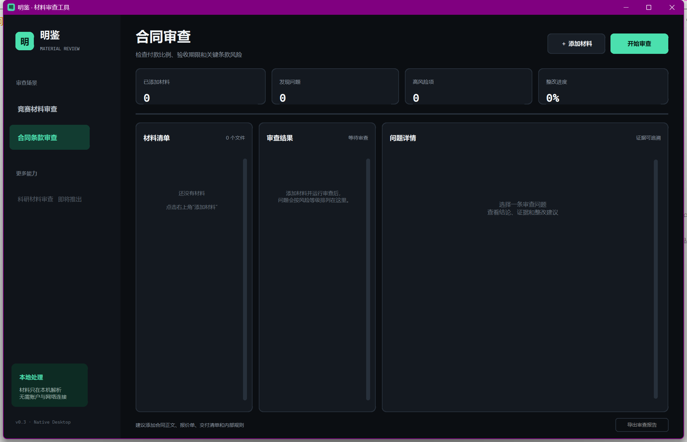
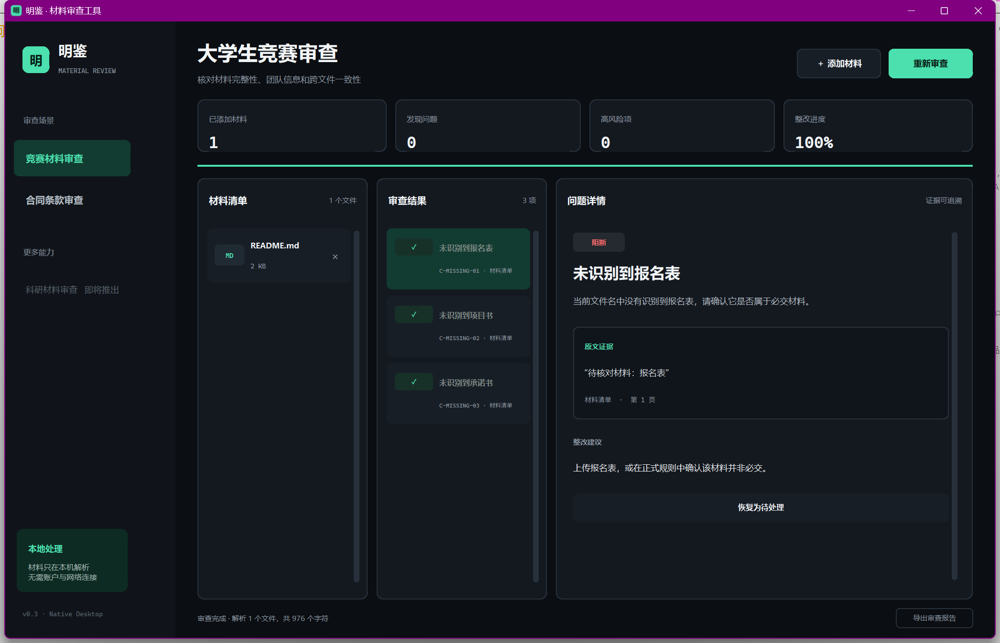

本地文件解析
PDF、Word和Excel在本机解析，适合包含未公开项目资料的场景。

不止回答文档问题
[00] MATERIAL REVIEW
上传比赛通知、报名表和项目书。明鉴检查材料完整性、团队人数与关键字段，输出按风险排序的整改清单。

HOW IT WORKS
支持PDF、DOCX、XLSX和常用文本格式，可同时处理多份文件。
将人员、主体、金额、日期和材料类型整理成统一的审查对象。
程序处理人数、比例、期限和完整性，减少自由生成带来的不确定性。
每条问题附带文件、页码、原文片段和明确建议，可逐项销项。
PRIVACY BY DEFAULT
桌面端直接在本机解析和审查文件，不启动浏览器或本地Web服务。当前确定性规则无需把文档上传到外部服务器。
PDF、Word和Excel在本机解析，适合包含未公开项目资料的场景。
结论与文件、页码和原文绑定，人工可以快速复核判断依据。
确定性规则负责执行，大模型能力将在用户确认规则后按需接入。
READY TO REVIEW
下载明鉴Windows桌面端。无需安装Python或Node.js，双击即可启动。
9C15B237583FCD0A2C1FC596E97468BE4CBEAAA8ECDEE949ACEC8EBF2DEDA052